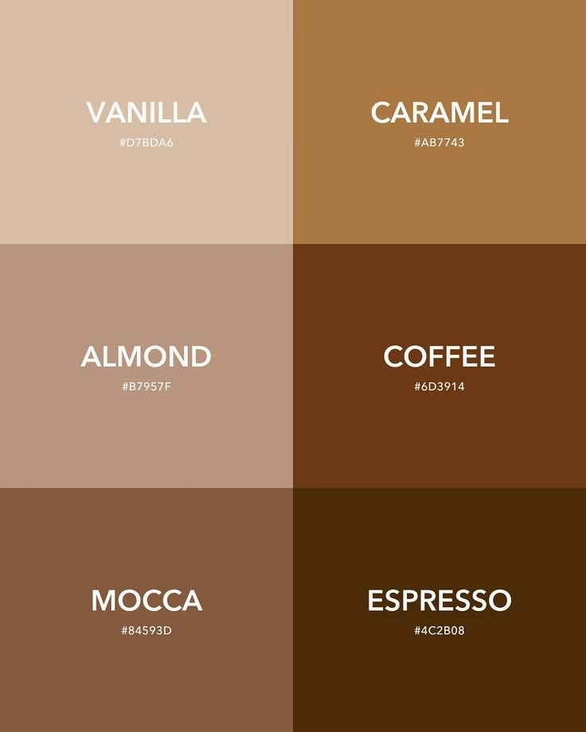

PRD Review — Product Requirements Document
Devpost Learn · Build With AI: Basics
| Screen | Purpose | Key Elements |
|---|---|---|
| Intro / Premise | First-visit onboarding | Animation, premise copy, Set Budget CTA |
| Budget Setup | First-visit budget input | Single numeric input, submit → localStorage |
| Zone Tab (default) | Daily health check | Sketch health bar, zone label, human note, monthly budget, tab nav |
| Activity Tab | Transaction log + cash entry | Feed (merchant, category icon, datetime, source), empty state, cash form, refresh |
| Danger Overlay | Budget exceeded | Full-screen GSAP DANGER animation, Budget empty message |

6-tone coffee scale replacing traditional red/green/yellow traffic lights:
#D7BDA6#AB7743#B7957F#6D3914#84593D#4C2B08Chalk sketch aesthetic featuring an outlined container with textured diagonal hatching:
High-character pairing for an analog, human feel:
"Breathing room looks good. Keep it steady."
"Getting tighter. Maybe pause the non-essentials?"
"Deep in the danger zone. Time to stop."
DANGER overlay + "Budget is empty now"
| State | Trigger | User Sees | Behavior |
|---|---|---|---|
| First Use | No budget in localStorage | Intro anim → Premise → Budget input | Redirect to Zone tab after submit |
| Returning | Budget exists | Zone tab + pseudo-bank auto-load | Health bar animates to current zone |
| Empty Feed | No transactions (sandbox or manual) | "There are no transactions here. Feel free to spend a little on yourself." | Human note, no error |
| Cash Entry Error | Empty / negative / non-numeric amount | Inline error: "Enter a valid amount" | Blocks submit, keeps form open |
| Danger Zone | Remaining < 20% budget | Zone: Danger, fragmented sketch, danger note | Health bar animates to danger style |
| Budget Depleted | Remaining ≤ 0% | DANGER GSAP overlay + "Budget is empty now" | Prominent animation, health bar shows negative |
| Refresh | User clicks refresh button | Feed updates with new sandbox data | Recalculates zone, animates health bar |
Review the PRD above. If it looks good, say "looks good" and we'll move to 4-spec (Technical Specification).
Markdown stays canonical at devpost/prd.md